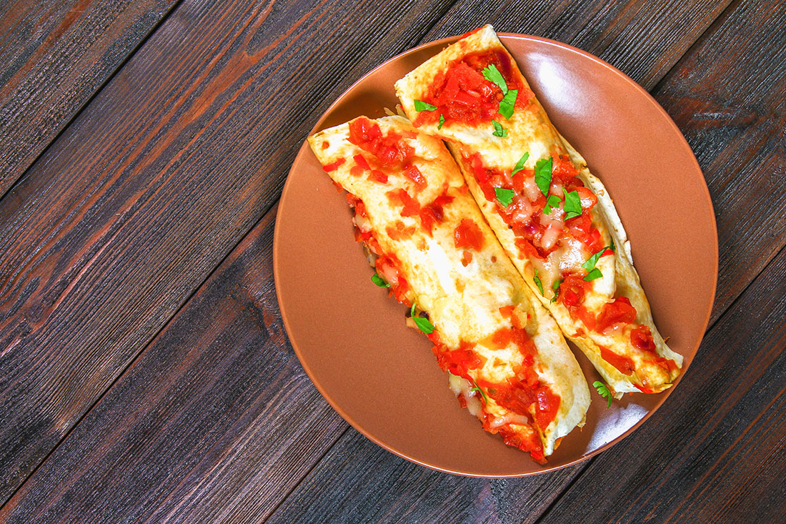

example
cafe

Enchiladas, a Culinary Monument to Colonialism
When the Spanish conquistador Bernal Díaz del Castillo first entered the Aztec capital Tenochtitlán on 8 November 1519, he was amazed – not so much by the temples and palaces which dominated the city as by the food. He had never seen anything so rich, nor so unusual. The meals eaten by King Moctezuma II were especially dazzling. As Díaz recalled in his Historia verdadera de la conquista de la Nueva España (1576), 300 dishes were cooked for the monarch alone, while a further 1,000 were prepared for his guests. Served on platters of ‘red and black Cholula pottery’, these were of every imaginable variety. As well as ‘two thousand pots of chocolate’ and no end of fruit, there were ‘fowls, turkeys, pheasants, partridges, domestic and wild ducks, deer, peccary, reed birds, doves, hares, rabbits, and so many other birds and beasts that [Díaz] could never finish naming them’. There were even plates of human flesh – or so he had heard. But most striking of all was a little dish served between courses. Midway through the meal, Díaz wrote